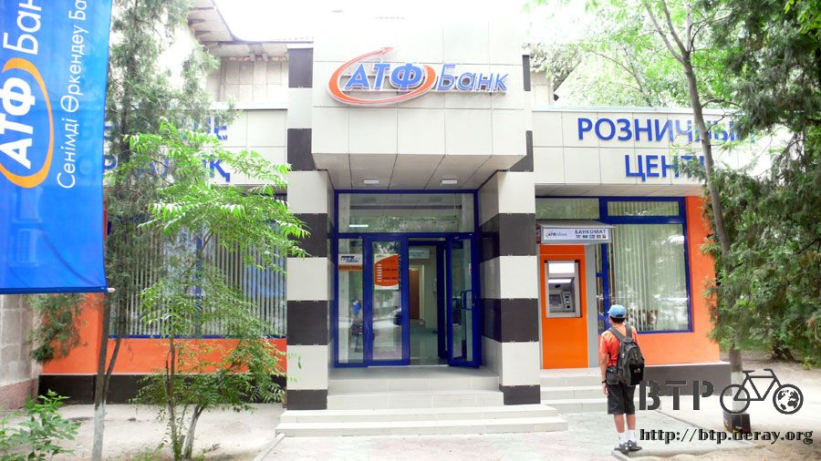

汽車都市、都是汽車
哈薩克的蒼蠅多得有點令人討厭，好不容易有一張舒服的床可以睡上一覺，整個晚上也要跟蒼蠅比誰的耐性好。
白天騎車的時候也是，一堆的蒼蠅環繞著我飛來飛去，很礙眼可是又趕不走，揮舞著手反而讓自己騎車更危險。
穿上終於又洗乾淨的衣服，準備離開這個好不容易出現的旅館，想吃過早餐再出發，到隔壁餐廳報到。
早餐就吃簡單一點，一壺熱奶茶大概有六杯的分量，配上好幾塊的硬麵包，這樣吃就算很不錯了。
桌上放了一個罐子的方糖，我都喝得很甜，每一杯就加兩粒下去，看著方糖在熱茶中溶解的樣子還挺有趣的。
目前距離哈薩克的舊首都還有不到四十公里，預計中午的時候可以抵達，最理想的情況是能夠找到一個只有地址的中繼站。
這樣就能有地方可以睡覺、可以上網、說不定還會有好心人帶我去吃飯，然後買本詳細地圖，順便換點錢。
總之要是找的到的話，就會有很多好事發生，但是我不敢抱太大的希望，畢竟靠的只是一個地址...
從郊區往城市的路上，沿路都會看到很多搭便車的人。
路上什麼樣的車都有，但就是沒有計程車，因為所有在路上跑的車子，只要你能攔得下來，那它就是免費的計程車。
三三兩兩的人，男女老少都有，站在路邊，右手下垂離大腿大概十公分，將食指伸出來，很低調的姿勢，可是每輛車都會停下來載這些搭便車的。
這些搭便車的怎麼看都不像是觀光客，而搭便車對他們來說只是家常便飯而已，不論要去哪裡都只要站在馬路邊，攔下車子，然後看順不順路，輕鬆得很。
雖然很不可思議，但也許這是汽車共乘制度的極佳表現方式。
越接近市區車子的數量就越多，多的有點誇張，路上行走的人都沒有車子來得多。
我終於找到一個比台北市空氣更髒、自行車更沒有路權的城市，目前這個寶座讓阿拉木圖給奪下。
雖然接近市區之後，馬路的情況變得比較好，但是因為汽車的數量激增，所以騎起來反而更危險，車子都用很快的速度、很近的距離，從身邊急駛過去，
既不閃你、也不讓你，會不會被撞到完全是看老天爺有沒有保佑。

之前在中國的時候，筆記本中的『正』字標記是用來記錄今天吃了幾根冰棒，現在人到了哈薩克，正字標記依然在使用，可是統計的東西不一樣了。
換成統記被狗追的『數量』，本來是統記被狗追的『次數』，但是發現這樣統計會有盲點，因為常常都是兩隻狗一起追我，而不是一次一隻。
光是今天一天就被六隻狗追著跑，聽到狗吠聲之後先回頭看一下狗的種類和大小，如果是哪種不會嚇到尿褲子的狗，那就讓牠追沒關係。
道路兩旁的行道樹種得太茂密了，樹高而且枝葉繁盛，根本看不見路兩旁的田裡種些什麼，騎車時能欣賞的風景都被擋得差不多了。


想上廁所的時候就離開馬路轉到小徑裡面解決一下再出發～

中午的時候抵達阿拉木圖的牌子，終於到了進入哈薩克以來的第一個大城市。
本來以為又會看到高樓大廈一棟接著一棟，可是卻和我想像的不一樣，樓不高，也不商業化，馬路很大條，建築很低調。
我以為是還沒有繞進市區的關係，等等應該會越來越熱鬧吧？

這個是阿拉木圖的城市徽章，沿路上每個城鎮只要不要太小，都會有屬於自己的圖案，之前大多都是用一些農產品當圖案。
阿拉木圖的比較特殊。是果實中的一隻花豹。

後來繞行了整個城市一圈，都是不怎麼發達的地方，與其說是大城市，不如說是很大很大的小村莊。
在國境那換了一萬兩千元的堅戈，花了幾天之後開始比較適應這個貨幣的價值，哈薩克這一個月的花費則規劃一天是一千五百堅戈。
平常不住宿，三～五天住一次旅館好好洗個澡跟洗衣服，這樣一個月的哈薩克旅費應該不至於燒光接下來的旅費。

我才在想為什麼這邊的汽車這麼多，是因為大眾交通不發達的關係嗎？
城市裡有極少數的巴士，路上也有看到火車站，鐵軌則是沒有柵欄圍著照樣跑，感覺有點危險，但是畫面還挺漂亮的。
仔細一看路行駛中的車輛，真是超猛的，右駕跟左駕的規格的車子都有，一樣都在路上跑，這樣居然不會撞成一團，真是佩服哈薩克人的開車技術。
有些沒有紅綠燈的地方，可是車流量又很大，就會有交通警察坐在重型機車上面，用著大聲公指揮交通。
他說哪邊可以走，大家才會乖乖的走，不聽他指揮的話，警察就會公然的開罵。
這裡真是一個名副其實的汽車都市，路上都是汽車。
終於出現了修路的工人，多虧他們讓城市裡的路好得不得了，像樣的柏油路終於出現了，希望離開城市還能繼續保持下去。

下午兩點的時候已經快要離開市區了，肚子有點餓，不太確定眼睛看到的招牌是餐廳還是五金行，直到看到屋簷下擺著桌椅才確定這裡是可以吃飯的。
停好小多看一下大家在吃什麼，有湯麵、炸的漢堡肉配白飯、沙拉、麵包、奶茶這些看起來就很好吃的東西，可是不知道該怎麼點餐。

有一個在外面用餐的人看著我比吃飯的手勢，我點頭如搗蒜的說『是是是～』
臉上貼著白色十字繃帶的年輕人帶我進去餐廳裡面，這邊要自己開口跟歐巴桑點餐，多虧他幫我點菜，我才能吃到這麼豐盛的午餐。

我先看其他人吃些什麼，然後用手指給年輕人看，他就幫我點一樣的東西，今天的午餐有紅燒牛肉湯麵、青椒鑲肉、烤肉餅和奶茶。
每一樣都非常得好吃，而且吃了這麼多東西費用也不貴，還是這樣的大眾食堂合我胃口。
奶茶很好喝，喝光之後都會有像是羊大便的渣渣，哈薩克的茶葉好像是加工過的顆粒狀。

吃飯的時候對小多有興趣的路人，是不分國家的，跟在中國一樣大家都會圍著小多打量，只是現在我已經聽不懂他們問的問題了。
只好假設聽懂問題，然後自己回答。
一開始就會先拍拍自己的胸膛，說『台灣～台灣～』，這樣大家都聽得懂我來自哪裡。
雖然聽過台灣，可是大家似乎對它的印象不多，問我是從台灣騎到這裡嗎？
看來台灣是個島國應該沒幾個人知道吧？就跟今天抓一個台灣人問他哈薩克在哪裡，能夠正確答出來的也沒幾個一樣。
有點搞不清楚這個國家究竟是發達還是落後，路邊有賣柴火的人家，有點不可思議對吧，但是生意好得很。

在哈薩克的行程很簡單，只有兩個目的地，一個是阿拉木圖，從穿越國境開始就一直問人家阿拉木圖怎麼走，現在已經到了。
接下來就要問下一個目的地，阿斯塔那，這是哈薩克目前的首都，距離現在大約一千一百公里遠。
從這麼遠的地方就開始問人家怎麼走，可是大家還真的都答得出來，看來應該可以順利騎到。
在充斥汽車的馬路上小心翼翼的騎車，半路還被指揮交通的人攔下來，我還以為這邊是禁行自行車所以攔我。
結果只是單純的想跟我握手而已，真是可愛的兩個人，附帶一提，哈薩克全國應該都沒有禁行自行車的路。
照片中包包裡有一個快要掉下來的橘色袋子，裡面是買太多不知道要吃到什麼時候才吃的完的杏子。
吃過午餐之後接著騎車，因為天空已經陰了一整天，風吹起來又濕濕涼涼的，隨時都會下雨，我想趕在下雨之前要騎到一個可以過夜的地方。
因為今天肯定會下雨，所以希望過夜的地方至少要有屋頂可以讓我躲雨，在半夜變成落湯雞一點也不好玩。
出了這個拱門就算離開阿拉木圖的範圍了～

路邊有賣一些奇怪的東西，大大黃色的氣壓瓶上面寫著KBAC，不知道是賣水還是賣汽油？

在市區繞了一大圈可是都沒看到什麼台灣貿易中心，看來今天要找到人接濟的夢想已經泡湯了，認命的靠自己吧。
下午四點雨滴開始落下，滴滴答答的打在身上，該來的這一刻還是來了，繼續撐著騎一小段路，因為這裡是什麼都沒有的荒郊野外。
好不容易看到路邊有一棟很漂亮的餐廳，先把小多牽進去躲雨在說，站在餐廳延伸出來的長廊屋簷底下，雨勢越來越大，暴雨似的下個不停。

呆呆的看了三分鐘，餐廳的員工發現我的存在，從裡面探頭看我，白白躲雨有點不好意思，就點了一壺熱奶茶慢慢喝。
看等一下雨會不會轉小一點，一邊喝著奶茶一邊跟員工們慢慢熟稔起來。
這個餐廳很酷，所有的人都是員工，除了我之外。
插著餐廳裡的電整理照片跟遊記，這邊沒有人去過中國，將之前的照片放給大家看，烏魯木齊、賽里木湖、西安，滿足大家對中國的好奇心。
帶著眼鏡回頭打量著我的就是餐廳的老闆，發勒呵丁，他看著之前在中國的照片，頻頻問說這個不是哈薩克嗎？
除了年紀比較大的阿姨跟伯伯，這樣的餐廳都會有年輕人在打工，照片裡是茉迪荷、絲薇塔、涅瑪特，兩個女侍者都還是學生，今年十八歲。
在學校學的是餐館管理，不上學的時候就到餐廳來實習打工，從早上九點要做到凌晨一點，是非常辛苦的工作。(工時未免也太長了吧)
負責吧台的涅瑪特也才二十三歲，我又是最老的一個~_~，還好我說自己二十六歲都沒有人相信，看起來比實際年齡年輕(哇哈哈)。
涅瑪特泡了杯咖啡請我喝，茉迪荷會說一點英文，可以幫忙翻譯，順便矯正我的哈薩克文發音，再多學幾個新的單字。
照片由右至左分別是：莫迪荷、躲雨的路人、涅瑪特、絲薇塔、餐廳的女主人『夸蘭』，正專心看遊記的老闆，和兩個服務生。

餐廳的老闆『發勒呵丁』超和氣，本來只打算在這裡躲雨，但是看過遊記之後他整個人龍心大悅。
本來是放在屋簷下的小多被牽去房子裡面放著，今天被留宿下來，晚餐也請我吃，非常得大方和親切。

晚餐就繼續喝奶茶，配著麵包，還有很豐盛的配料，白煮蛋、各式的火腿、糖果等等，很好吃呢。
坐在吧檯喝著涅瑪特泡的咖啡，整理今天的遊記，剛剛才發生的事情，馬上就被寫到遊記裡，真實的生活轉變成故事。
很像一本書『說不完的故事』裡的劇情，主角本來只是一個借書回去看的少年，看著看著發現自己已經被寫在書裡面了。
在哈薩克這一個月看來會麻煩很多哈薩克人的招待，一個陌生的國度，蘊含著許多的愛心。
從躲雨到熱茶，晚餐到住宿，哈薩克人的熱情和好客令人印象深刻，我喜歡這個國家，雖然它的汽車很多，但是人心很美麗。
老天爺的眷顧，讓這場大雨下的正是時候，雨滴落下的同時也為我安排好了今天的住所，不是荒郊野外，而是溫馨滿溢的餐廳。
繼續閱讀：6.29 廢棄科帕的管理員
哈薩克-堅戈－ 1：0.26 台幣
6.28 |
總計：810元 |
早餐奶茶、麵包170元、午餐湯麵、肉餅、青椒鑲肉、奶茶440、躲雨的熱奶茶200元 |
|